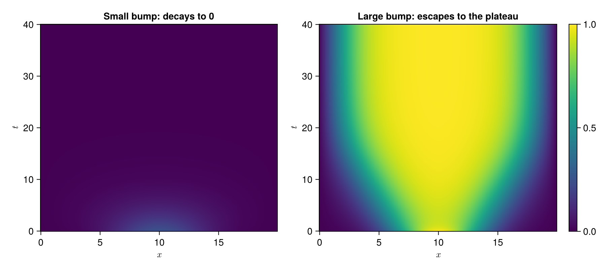

Bistable Nagumo equation
Overview
The bistable Nagumo equation (also called the Zeldovich equation or the asymmetric Allen-Cahn equation) is the scalar reaction-diffusion equation
\[u_t = \nu u_{xx} + u(u-a)(1-u), \qquad 0 < a < 1,\]
obtained from the FitzHugh-Nagumo system by dropping the recovery variable. It is one of the simplest PDEs whose reaction term is bistable: $f(u) = u(u-a)(1-u)$ has stable roots at $u=0$ and $u=1$ and an unstable root at the threshold $u=a$.
Some properties
Gradient flow: the equation is the $L_2$-gradient flow of the energy
\[E(u) = \int \left( \frac{\nu}{2} u_x^2 - F(u) \right) dx, \qquad F'(u) = f(u),\]
so $E$ decreases along every solution and all bounded trajectories converge to steady states.
Comparison principle: initial data with $u_0 \le a$ everywhere decays to zero. Escape from the zero state requires a positive excursion above $a$ that is both high and wide enough to overcome diffusion.
Threshold phenomenon: on a bounded domain with homogeneous Dirichlet conditions, for $a < 1/2$ and a domain larger than a saddle-node value $L^*(\nu, a)$ there are exactly three nonnegative steady states: the zero state, an unstable bump (the critical nucleus, with exactly one unstable eigendirection), and a stable plateau near $u \equiv 1$. The stable manifold of the critical nucleus separates the basin of attraction of $u \equiv 0$ from that of the plateau. This makes the model a convenient test case for methods that estimate regions of attraction.
Model
Expanding the reaction term as $u(u-a)(1-u) = -a u + (1+a) u^2 - u^3$, the Nagumo equation becomes a linear-quadratic-cubic model:
\[\dot{\mathbf{u}}(t) = \mathbf{Au}(t) + \mathbf{F}(\mathbf{u}(t) \oslash \mathbf{u}(t)) + \mathbf{E}(\mathbf{u}(t) \oslash \mathbf{u}(t) \oslash \mathbf{u}(t)) + \mathbf{Bw}(t)\]
where
- $\mathbf{u}\in\mathbb{R}^N$: the state vector
- $\mathbf{w}\in\mathbb{R}^m$: the input vector (boundary values)
- $\mathbf{A}\in\mathbb{R}^{N\times N}$: the linear state matrix (diffusion and the $-au$ term)
- $\mathbf{F}\in\mathbb{R}^{N\times N(N+1)/2}$: the quadratic state matrix without redundancy (the $(1+a)u^2$ term)
- $\mathbf{E}\in\mathbb{R}^{N\times N(N+1)(N+2)/6}$: the cubic state matrix without redundancy (the $-u^3$ term)
- $\mathbf{B}\in\mathbb{R}^{N\times m}$: the control input matrix
The model parameters are passed as params=Dict(:ν => ..., :a => ...).
Numerical Integration
For the numerical integration we consider two methods:
- Semi-Implicit Crank-Nicolson (SICN)
- Crank-Nicolson Adams-Bashforth (CNAB)
Both treat the linear operator $\mathbf{A}$ with Crank-Nicolson and the reaction term $\mathbf{N}(\mathbf{u}) = \mathbf{F}\mathbf{u}^{\langle 2\rangle} + \mathbf{E}\mathbf{u}^{\langle 3\rangle}$ explicitly.
SICN:
\[\mathbf{u}(t_{k+1}) = \left(\mathbf{I}-\frac{\Delta t}{2}\mathbf{A}\right)^{-1} \left\{ \left( \mathbf{I} + \frac{\Delta t}{2}\mathbf{A} \right)\mathbf{u}(t_k) + \Delta t\,\mathbf{N}(\mathbf{u}(t_k)) + \frac{\Delta t}{2} \mathbf{B}\left[ \mathbf{w}(t_{k+1}) + \mathbf{w}(t_k) \right]\right\}\]
CNAB:
If $k=1$ the SICN step is used. If $k\geq 2$
\[\mathbf{u}(t_{k+1}) = \left(\mathbf{I}-\frac{\Delta t}{2}\mathbf{A}\right)^{-1} \left\{ \left( \mathbf{I} + \frac{\Delta t}{2}\mathbf{A} \right)\mathbf{u}(t_k) + \frac{3\Delta t}{2}\mathbf{N}(\mathbf{u}(t_k)) - \frac{\Delta t}{2}\mathbf{N}(\mathbf{u}(t_{k-1})) + \frac{\Delta t}{2} \mathbf{B}\left[ \mathbf{w}(t_{k+1}) + \mathbf{w}(t_k) \right]\right\}\]
where $\mathbf{u}^{\langle 2 \rangle}=\mathbf{u} \oslash \mathbf{u}$ and $\mathbf{u}^{\langle 3 \rangle}=\mathbf{u} \oslash \mathbf{u} \oslash \mathbf{u}$.
The fast integrator integrate_model_fast uses the same schemes with a pre-built structured solver from build_fast_solver (FFT-based for periodic boundaries, eigendecomposition of the symmetric tridiagonal operator for Dirichlet and mixed boundaries).
!!! Note Please go over the derivations in 1D heat equation and Viscous Burgers' equation for details on how to construct each operators.
Example
using CairoMakie
using LinearAlgebra
using PolynomialModelReductionDataset
const pomoreda = PolynomialModelReductionDataset
# Setup
Ω = (0.0, 20.0)
T = (0.0, 40.0)
Nx = 2^8
dt = 1e-2
nagumo = pomoreda.NagumoModel(
spatial_domain=Ω, time_domain=T, Δx=((Ω[2]-Ω[1]) + 1/Nx)/Nx, Δt=dt,
params=Dict(:ν => 1.0, :a => 0.3), BC=:dirichlet
)
DS = 10
x = nagumo.xspan
xc = 0.5 * (Ω[1] + Ω[2])
# Operators and fast solver
A, F, E, B = nagumo.finite_diff_model(nagumo, nagumo.params)
solver = pomoreda.build_fast_solver(nagumo, nagumo.params; scheme=:CN)
# Two Gaussian bumps on either side of the threshold
nagumo.IC = 0.25 * exp.(-((x .- xc) / 4.0).^2)
U_small = pomoreda.integrate_model_fast(nagumo, solver, nagumo.tspan, nagumo.IC;
quadratic_matrix=F, cubic_matrix=E, integrator_type=:CNAB)
nagumo.IC = 1.0 * exp.(-((x .- xc) / 4.0).^2)
U_large = pomoreda.integrate_model_fast(nagumo, solver, nagumo.tspan, nagumo.IC;
quadratic_matrix=F, cubic_matrix=E, integrator_type=:CNAB)
fig = Figure(size=(900, 400))
ax1 = Axis(fig[1, 1], xlabel=L"x", ylabel=L"t", title="Small bump: decays to 0")
heatmap!(ax1, x, nagumo.tspan[1:DS:end], U_small[:, 1:DS:end], colorrange=(0, 1))
ax2 = Axis(fig[1, 2], xlabel=L"x", ylabel=L"t", title="Large bump: escapes to the plateau")
hm = heatmap!(ax2, x, nagumo.tspan[1:DS:end], U_large[:, 1:DS:end], colorrange=(0, 1))
Colorbar(fig[1, 3], hm)
fig
API
PolynomialModelReductionDataset.Nagumo.NagumoModel — Type
mutable struct NagumoModel <: AbstractModelBistable Nagumo equation model (also called the Zeldovich or asymmetric Allen-Cahn equation). It is the scalar FitzHugh-Nagumo equation without the recovery variable:
\[\frac{\partial u}{\partial t} = \nu\frac{\partial^2 u}{\partial x^2} + u(u-a)(1-u)\]
where $u$ is the state variable, $ν$ is the diffusion coefficient, and $a \in (0,1)$ is the threshold parameter. Expanding the reaction term,
\[u(u-a)(1-u) = -a u + (1+a) u^2 - u^3,\]
so the semi-discrete model is linear-quadratic-cubic in the state. The reaction term has stable roots at $u=0$ and $u=1$ and an unstable root at $u=a$. For $a<1/2$ and a large enough Dirichlet domain the zero state is locally but not globally stable: a nontrivial unstable steady state (the critical nucleus) separates the basin of $u\equiv 0$ from that of the plateau state near $u\equiv 1$.
Fields
spatial_domain::Tuple{Real,Real}: spatial domaintime_domain::Tuple{Real,Real}: temporal domainparam_domain::Dict{Symbol,Tuple{Real,Real}}: parameter domainΔx::Real: spatial grid sizeΔt::Real: temporal step sizexspan::Vector{<:Real}: spatial grid pointstspan::Vector{<:Real}: temporal pointsparams::Dict{Symbol,Union{Real,AbstractArray{<:Real}}}: parameters (:νdiffusion,:athreshold)spatial_dim::Int: spatial dimensiontime_dim::Int: temporal dimensionparam_dim::Dict{Symbol,Int}: parameter dimensionIC::AbstractArray{<:Real}: initial conditionBC::Symbol: boundary conditionfinite_diff_model::Function: model using Finite Differenceintegrate_model::Function: integrator using Crank-Nicolson (linear) Explicit (nonlinear) method
PolynomialModelReductionDataset.Nagumo — Module
Bistable Nagumo equation PDE ModelPolynomialModelReductionDataset.FastSolvers.build_fast_solver — Method
build_fast_solver(model, params; scheme, Δt)
Build a fast Crank-Nicolson-flavoured solver for the Nagumo model (bakes α = Δt/2). For periodic BCs this is an FFT-based circulant solver; for Dirichlet/mixed BCs the underlying A is symmetric tridiagonal and we eigendecompose it once.
PolynomialModelReductionDataset.FastSolvers.integrate_model_fast — Function
integrate_model_fast(model, solver, tdata, u0; ...)
integrate_model_fast(
model,
solver,
tdata,
u0,
input;
quadratic_matrix,
cubic_matrix,
control_matrix,
integrator_type,
nl_jm1
)
Fast SICN or CNAB integrator for the 1D Nagumo model.
Arguments
model::NagumoModelsolver::AbstractFastSolver: frombuild_fast_solverwithscheme=:CNtdata::AbstractVector: time grid (uniform spacing assumed)u0::AbstractVector: initial conditioninput::AbstractArray=Float64[]: boundary input matrix (if applicable)
Keyword Arguments
quadratic_matrix: F fromfinite_diff_modelcubic_matrix: E fromfinite_diff_modelcontrol_matrix=nothing: B fromfinite_diff_modelintegrator_type::Symbol=:CNAB::SICNor:CNABnl_jm1=nothing: reaction term at the previous step, seed for AB-2 (CNAB only)
PolynomialModelReductionDataset.Nagumo.finite_diff_dirichlet_model — Method
finite_diff_dirichlet_model(N, Δx, params)
Create the matrices A (linear operator), F (quadratic operator), E (cubic operator), and B (input operator) for the Nagumo model with Dirichlet boundary condition. The two columns of B carry the boundary values $u(x_L,t)$ and $u(x_R,t)$. For the homogeneous problem pass a zero input (or no input).
Arguments
N::Real: spatial dimensionΔx::Real: spatial grid sizeparams::Dict: parameters
Returns
A::SparseMatrixCSC{Float64,Int}: linear operatorF::SparseMatrixCSC{Float64,Int}: quadratic operatorE::SparseMatrixCSC{Float64,Int}: cubic operatorB::SparseMatrixCSC{Float64,Int}: input operator
PolynomialModelReductionDataset.Nagumo.finite_diff_mixed_model — Method
finite_diff_mixed_model(N, Δx, params)
Create the matrices A (linear operator), F (quadratic operator), E (cubic operator), and B (input operator) for the Nagumo model with mixed boundary condition: Dirichlet value at the left end and Neumann flux at the right end.
Arguments
N::Real: spatial dimensionΔx::Real: spatial grid sizeparams::Dict: parameters
Returns
A::SparseMatrixCSC{Float64,Int}: linear operatorF::SparseMatrixCSC{Float64,Int}: quadratic operatorE::SparseMatrixCSC{Float64,Int}: cubic operatorB::SparseMatrixCSC{Float64,Int}: input operator
PolynomialModelReductionDataset.Nagumo.finite_diff_model — Method
finite_diff_model(model, params)
Create the matrices A (linear operator), F (quadratic operator), E (cubic operator), and, for non-periodic boundary conditions, B (input operator) for the Nagumo model.
Arguments
model::NagumoModel: Nagumo modelparams::Dict: parameters dictionary
Returns
- periodic:
A, F, E - Dirichlet / mixed:
A, F, E, B
PolynomialModelReductionDataset.Nagumo.finite_diff_periodic_model — Method
finite_diff_periodic_model(N, Δx, params)
Create the matrices A (linear operator), F (quadratic operator), and E (cubic operator) for the Nagumo model with periodic boundary condition.
Arguments
N::Real: spatial dimensionΔx::Real: spatial grid sizeparams::Dict: parameters
Returns
A::SparseMatrixCSC{Float64,Int}: linear operatorF::SparseMatrixCSC{Float64,Int}: quadratic operatorE::SparseMatrixCSC{Float64,Int}: cubic operator
PolynomialModelReductionDataset.Nagumo.integrate_model — Method
integrate_model(tdata, u0; ...)
integrate_model(tdata, u0, input; kwargs...)
Integrate the Nagumo model using the Crank-Nicolson Adams-Bashforth (CNAB) or the Semi-Implicit Crank-Nicolson (SICN) method.
Arguments
tdata::AbstractArray{T}: time datau0::AbstractArray{T}: initial conditioninput::AbstractArray{T}=[]: input data
Keyword Arguments
linear_matrix::AbstractArray{T,2}: linear matrix Aquadratic_matrix::AbstractArray{T,2}: quadratic matrix Fcubic_matrix::AbstractArray{T,2}: cubic matrix Econtrol_matrix::AbstractArray{T,2}: control matrix Bsystem_input::Bool=false: system input flagconst_stepsize::Bool=false: constant step size flagnl_jm1::AbstractArray{T}=nothing: reaction term at the previous time step (CNAB only)integrator_type::Symbol=:CNAB::SICNor:CNAB
Returns
u::Array{T,2}: integrated model states
Notes
- If
system_inputis true, thencontrol_matrixmust be provided. - If
const_stepsizeis true, then the time step size is assumed to be constant. - If
nl_jm1is provided, then the reaction term at the previous time step is used to start AB-2.
PolynomialModelReductionDataset.Nagumo.integrate_model_with_control_CNAB — Method
integrate_model_with_control_CNAB(
tdata,
u0,
input;
linear_matrix,
quadratic_matrix,
cubic_matrix,
control_matrix,
const_stepsize,
nl_jm1
)
Integrate the Nagumo model using the Crank-Nicolson (linear) Adams-Bashforth (nonlinear) method (CNAB) with control.
PolynomialModelReductionDataset.Nagumo.integrate_model_with_control_SICN — Method
integrate_model_with_control_SICN(
tdata,
u0,
input;
linear_matrix,
quadratic_matrix,
cubic_matrix,
control_matrix,
const_stepsize
)
Integrate the Nagumo model using the Semi-Implicit Crank-Nicolson (SICN) method with control input.
PolynomialModelReductionDataset.Nagumo.integrate_model_without_control_CNAB — Method
integrate_model_without_control_CNAB(
tdata,
u0;
linear_matrix,
quadratic_matrix,
cubic_matrix,
const_stepsize,
nl_jm1
)
Integrate the Nagumo model using the Crank-Nicolson (linear) Adams-Bashforth (nonlinear) method (CNAB) without control.
PolynomialModelReductionDataset.Nagumo.integrate_model_without_control_SICN — Method
integrate_model_without_control_SICN(
tdata,
u0;
linear_matrix,
quadratic_matrix,
cubic_matrix,
const_stepsize
)
Integrate the Nagumo model using the Crank-Nicolson (linear) Explicit (nonlinear) method, or, in other words, the Semi-Implicit Crank-Nicolson (SICN) method without control.
PolynomialModelReductionDataset.Nagumo.reaction_operators — Method
reaction_operators(N, a)
Quadratic operator F (N × N(N+1)/2) and cubic operator E (N × N(N+1)(N+2)/6) of the reaction term $(1+a)u^2 - u^3$ in the non-redundant (unique Kronecker) coordinates. Only the $u_i^2$ and $u_i^3$ columns are nonzero.
PolynomialModelReductionDataset.Nagumo.reaction_term — Method
reaction_term(u, F, E)
Evaluate the polynomial reaction term $F u^{⟨2⟩} + E u^{⟨3⟩}$ at a state vector u.